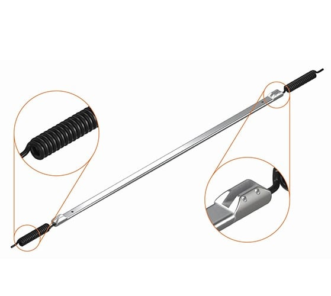

Interactive Soil Settlement Simulation
Visualizing the Effects of Embankment Loading on Clay Soil
Simulation Setup
- Model simulates a uniform clay soil layer under an embankment load.
- A magnetic extensometer is installed to monitor soil movement.
- Spider Magnets (1, 2, 3) move with the surrounding soil.
- The Datum (D) is a fixed anchor point in stable ground.
- We will observe both instrument readings and the actual physical settlement.
How the Probe Works
- The automated probe is a metal bar, approximately 600mm in length.
- Inside, a 400mm sensor actively detects magnetic fields.
- When a magnet enters this sensor range (0mm to 400mm), its exact position is identified.
- This position is sent as a signal to the data logger. If the magnet is outside this range, no data is recorded.
Try it: Drag the magnet on the right to see how the reading changes.
Uniform Clay Soil
0 %
Probe Readings
| Probe | Reading (mm) |
|---|---|
| Magnet 1 | 0.0 |
| Magnet 2 | 0.0 |
| Magnet 3 | 0.0 |
| Datum | 0.0 |
Actual Physical Movement
| Point | Movement (mm) |
|---|---|
| Magnet 1 | 0.0 |
| Magnet 2 | 0.0 |
| Magnet 3 | 0.0 |
| Datum | 0.0 |
Summary of Observations
- The greatest physical settlement occurs at the surface (Magnet 1) and decreases with depth.
- The probe readings for the magnets are negative because the soil settlement is greater than the pipe's downward movement.
- The probe reading for the Datum is positive, showing the slight downward penetration of the pipe relative to the fixed anchor.
- This simulation highlights the difference between instrument readings (relative) and actual physical settlement (absolute).